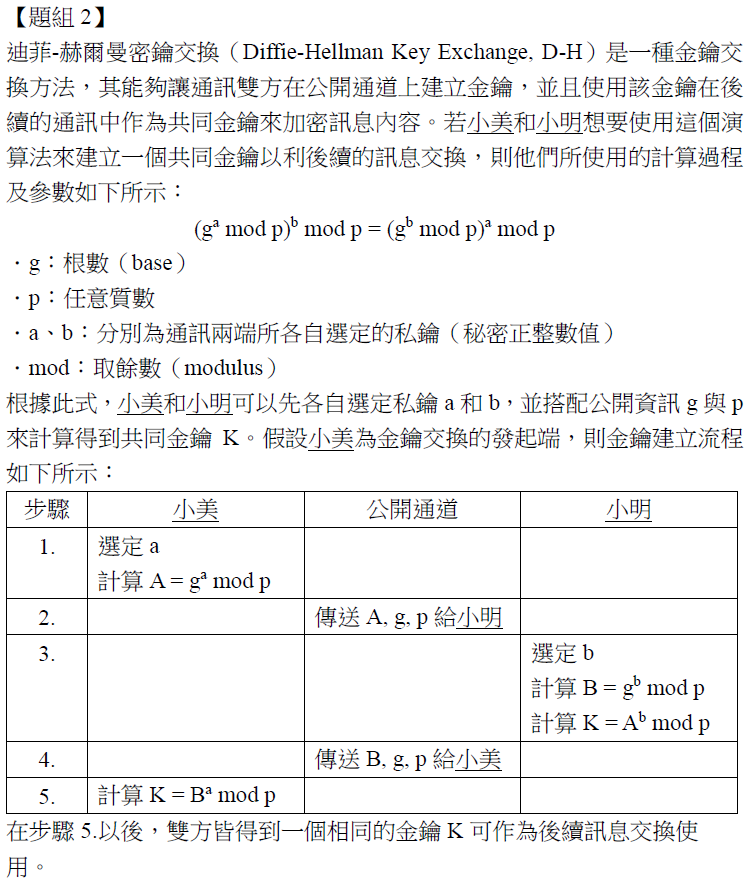
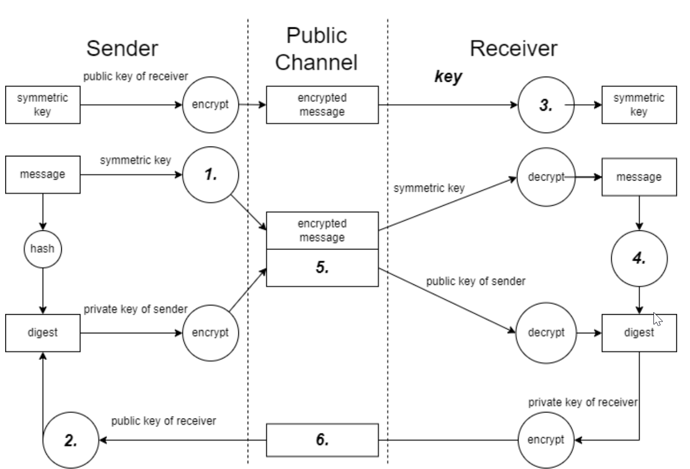

在 ISO27000 系列標準中, 下列何者為建置資訊安全管理系統的實作指引 (Information security management systems – Guidance) ?
在
ISO/IEC 27000 系列標準中：
- ISO/IEC 27001：規定了建立、實施、維護和持續改進 ISMS 的要求 (Requirements)，是驗證的基礎。
- ISO/IEC 27002：提供了 ISO/IEC 27001 附錄A 中控制措施的實施指引 (Code of practice / Guidelines for information security controls)。
- ISO/IEC 27003：提供了實施 ISMS 的指引 (Guidance)，對 ISO/IEC 27001 的要求進行更詳細的解釋和說明。
- ISO/IEC 27004：提供了資訊安全管理績效衡量的指引 (Monitoring, measurement, analysis and evaluation)。
題目問的是「實作指引 (
Guidance)」，
ISO/IEC 27003 正是提供
ISMS 實施指引的標準。
「M 公司的資訊系統, 每週均有進行系統與資料備份, 且有異地備份, 而近期公司增加了新多重加密機制, 讓資料安全可以進一步確保。然近期進行系統之復原測試時, 發現復原作業時間共需要 6 小時, 與公司的規定 4 小時, 明顯不符。」關於上述案例中, 「不」符合下列何者要求?
A
復原時間目標 (Recovery Time Objective, RTO)
B
復原點目標 (Recovery Point Objective, RPO)
C
平均復原時間 (Mean Time to Recovery, MTTR)
D
平均失效時間 (Mean Time to Failure, MTTF)
分析案例和選項：
- 案例描述：實際復原所需時間 (6 小時) 超過了公司規定的目標時間 (4 小時)。
- (A) RTO (復原時間目標)：指從災難發生到系統恢復運作所設定的目標時間。案例中公司規定 4 小時即為 RTO，而實際測試結果 6 小時未能達到此目標。因此，案例「不」符合 RTO 的要求。
- (B) RPO (復原點目標)：指可容忍丟失多少時間的資料量，與備份頻率相關。案例未提及資料丟失情況。
- (C) MTTR (平均復原時間)：是系統多次故障後，平均每次修復所需的時間，是一個統計值。案例描述的是單次測試結果。
- (D) MTTF (平均失效時間)：通常用於不可修復的元件，指其平均能正常工作的時間。對於可修復的系統，常用 MTBF (平均故障間隔時間)。
案例的核心問題是實際的
復原時間 (6 小時)
超過了
設定的目標時間 (4 小時)，即不符合
RTO 要求。
下列選項何者作為金鑰分配 (Key Distribution) 的安全性較佳?
A
3DES (Triple Data Encryption Standard)
D
ECC (Elliptic Curve Cryptography)
金鑰分配或金鑰交換是指通訊雙方安全地協商或傳輸加密金鑰的過程。這通常需要使用非對稱加密 (Asymmetric Cryptography) 或金鑰交換協定。
(A) 3DES 是對稱加密演算法，用於加密資料，不直接用於金鑰分配（它需要預先分配好金鑰）。
(B) MD5 是雜湊函數，用於產生訊息摘要以驗證完整性，不可逆，不能用於加密或金鑰分配。
(C) Blowfish 是對稱加密演算法。
(D) ECC (橢圓曲線密碼學) 是一種非對稱加密技術。基於 ECC 的演算法（如 ECDH - Elliptic Curve Diffie–Hellman）常用於金鑰交換，能在較短的金鑰長度下提供與 RSA 相當的安全性，效率較高。
因此，用於金鑰分配且安全性較佳的是 ECC。
下列何者「不」屬於主動式攻擊 (Active Attack)?
C
Typosquatting Attack (誤植域名攻擊)
主動式攻擊通常指攻擊者會修改系統資源、影響其運作或改變通訊內容的攻擊。相對的是被動式攻擊，通常指攻擊者僅竊聽或監視系統或通訊，而不改變其狀態（如竊聽、流量分析）。
(A) DDoS 攻擊主動發送大量流量，目的是癱瘓目標服務，屬於主動攻擊。
(B) 利用緩衝區溢位漏洞通常是為了執行任意程式碼或取得系統控制權，需要主動發送惡意輸入來觸發，屬於主動攻擊。
(D) 暴力破解是主動嘗試大量可能的密碼組合來猜測正確密碼，屬於主動攻擊。
(C) Typosquatting (域名仿冒/誤植域名) 是攻擊者註冊與知名網站域名相似（例如拼寫錯誤）的域名，等待使用者不小心輸入錯誤而訪問到惡意網站。這個攻擊本身依賴於使用者的錯誤，攻擊者並未主動對受害者或目標系統進行干擾或修改，更偏向於一種守株待兔的被動策略（儘管後續在惡意網站上可能進行主動攻擊）。
因此，相對不屬於主動式攻擊的是 (C)。
下列何項安全實作原則是為了預防僅因個人行為而造成可能的舞弊情形發生?
A
強制休假 (Mandatory vacation)
B
僅知原則 (Need to know basis)
D
職責分離 (Separation of duties)
分析各項原則的目的：
(A) 強制休假：要求擔任敏感職位（尤其金融相關）的員工必須離開工作崗位一段時間，讓其他人代理其職務。目的是為了發現該員工在職期間可能隱藏的舞弊或異常行為。
(B) 僅知原則：限制使用者只能存取其執行職務所必需知道的資訊，主要保護機密性。
(C) 最小權限：限制使用者只擁有執行其職務所必需的最低權限，防止越權操作。
(D) 職責分離 (SoD)：將一項關鍵任務拆分給多個不同的人負責，防止任何單一個人能夠獨立完成並掩蓋舞弊行為。這是最直接用於預防個人舞弊的內部控制原則。
題目問的是預防「僅因個人行為」造成的舞弊，職責分離正好是透過要求「多人參與」來防止「單一個人」舞弊。雖然強制休假也有助於發現舞弊，但職責分離是更根本的預防原則。
機房區域屬於防範基本設備操作直接存取的重要防護區域, 下列敘述何者「不」正確?
B
外包商只能在工作檯使用電腦遠距操作主機, 相關USB Disk 資料匯入, 需要經過掃毒後由機房管理人員協助使用
C
只有資訊人員可以自由進出機房, 不用填寫出入登記表
D
機房 Level 5 硬體安全模組 (Hardware Security Module, HSM) 設備需要另外實體隔離保護
機房實體安全管理措施：
(A) 限制攜帶具有拍照錄影功能的設備（如智慧手機）進入機房，是為了防止機密資訊（如設備配置、螢幕顯示內容）被輕易記錄和外洩。常見做法。
(B) 對於外包商的作業進行嚴格管制，限制其直接操作核心設備，並對外部儲存媒體（如 USB）的使用進行掃描和控管，是降低外部人員帶來風險的必要措施。
(C) 機房是重要區域，所有人員（包括資訊人員）的進出都應受到管制，並留下紀錄（如刷卡、登記）。聲稱資訊人員可以「自由進出、不用填寫登記表」是違反存取控制和稽核原則的，不正確。
(D) HSM 用於保護極度敏感的加密金鑰，其物理安全等級要求非常高（Level 5 可能是指 FIPS 140-2/3 的某個等級，代表極高的防篡改能力）。對這類高價值設備進行額外的實體隔離和保護（如鎖在獨立機櫃中）是合理的。
因此，「不」正確的敘述是 (C)。
「商業公司使用防毒和反垃圾郵件機制, 以保護公司的電子郵件系統。」請問上述屬於下列何種風險處理對策?
C
風險修改 (Risk modification)
風險處理選項：
- 風險避免：停止會導致風險的活動。
- 風險保留：接受風險。
- 風險修改/緩解 (Risk modification/mitigation)：採取措施降低風險的可能性或衝擊。
- 風險分擔/轉移 (Risk sharing/transfer)：將風險轉移給第三方。
使用
防毒和
反垃圾郵件機制的目的是
過濾掉惡意或
不需要的郵件，
降低惡意軟體感染或釣魚成功的
可能性。這是在
不停止使用電子郵件的前提下，
主動採取措施來降低風險。這符合
風險修改（或
風險緩解）的定義。
下列何者為使用自動化風險分析工具主要的原因?
D
大多數軟體工具具有易於使用且不需要任何訓練的使用者操作界面
使用自動化風險分析工具的原因：
(A) 工具確實可以處理和儲存大量資訊，但這更像是工具的能力，而非使用的主要動機。
(B) 這顯然是錯誤的。自動化工具通常能保存歷史數據和分析結果，便於後續追蹤、比較和重新分析。
(C) 風險分析本身需要專業知識和經驗來定義資產、識別威脅弱點、評估可能性和衝擊。自動化工具可以輔助計算、管理數據和套用模型，降低對使用者手動計算或複雜流程的依賴，使得不一定需要非常深入的分析專家也能執行基本的風險評估。相較於完全手動或複雜的定量分析方法，自動化工具對使用者的專業訓練要求相對較低。這是採用工具的一個重要原因。
(D) 雖然工具設計會追求易用性，但任何專業工具通常還是需要一定程度的學習和訓練才能有效使用，特別是風險分析這種涉及判斷和配置的領域。
綜合來看，(C) 指出自動化工具能降低對使用者專業知識的門檻，是其被採用的主要原因之一。
某中小企業資訊部門之業務執掌包含程式開發、程式上線、應用程式管理以及資料庫管理等, 該公司因故必須縮減資訊部門人力, 若您是該企業之資訊部門主管, 下列何種處理較無法降低資安風險的發生?
在資訊部門人力縮減的情況下，需要尋找補償措施來維持或降低資安風險。
(A) 資安工作通常需要專業知識和獨立性。將其移轉給不具備相關專業的其他業務單位，很可能導致資安工作執行不力或產生利益衝突，不但無法降低風險，反而可能增加風險。
(B) 增加監視紀錄（偵測性控制）有助於事後追查或及早發現異常，可以在人力不足、無法完全落實預防控制時，提供一定的補償。
(C) 增加稽核頻率可以更頻繁地檢查現有控制措施的有效性，及早發現問題。
(D) 導入自動化稽核工具可以提高稽核的效率和覆蓋率，彌補部分人力不足。
因此，最無法降低風險（甚至可能增加風險）的做法是 (A)。
下列何者「不」是提升服務可用性 (Availability) 的有效策略?
A
導入內容遞送網路 (Content Delivery Network, CDN) 服務
提升服務可用性的策略：
(A) CDN 將靜態內容快取到靠近使用者的邊緣節點，可以加速內容傳遞、減輕源站伺服器負載，並在源站故障時提供部分內容，有助於提升可用性和效能。
(B) 應用程式防火牆 (WAF) 主要目的是保護 Web 應用程式免受攻擊（如 SQLi, XSS），保障機密性和完整性，與直接提升服務可用性關係較小。雖然它可以阻擋某些導致服務中斷的攻擊，但其核心目標不是提高可用性本身。
(C) 自動擴展 (Auto Scaling) 機制可以根據實際負載自動增減伺服器資源，確保在高流量時仍能維持服務效能和可用性。
(D) 伺服器負載平衡 (Load Balancing) 將流量分散到多台後端伺服器，避免單點故障，提高系統的整體吞吐量和可用性。
因此，「不」是提升可用性主要策略的是 (B)。
依據我國《資通安全管理法施行細則》條文中規定, 下列何者「不」是資通安全維護計畫應 (或強制要求) 包括的事項?
根據《
資通安全管理法施行細則》第 6 條，
資通安全維護計畫應包括下列事項：
- 資通安全政策及目標。(C)
- 資通安全推動組織。
- 核心業務及其重要性。(A)
- 資通系統及資訊之盤點結果。
- 資通安全風險評估結果。
- 資通安全防護及控制措施。
- 資通安全事件通報應變及演練相關機制。
- 資通安全維護計畫與實施情形之持續精進及績效管理機制。
- 專責人力及經費之配置。(D)
- 其他經主管機關指定之事項。
選項 (B)
資通安全稽核組織並
未在施行細則中
明確列為計畫應包含的事項（雖然
資通安全法本文要求上級機關對下級進行稽核，且組織內部可能設有稽核單位，但
非計畫的法定內容）。
因此，「不」是計畫應包括事項的是 (B)。
資訊單位導入新企業資源規劃系統 (ERP System) 進行系統安全評估時, 應評估下列哪些項目? 1.系統安全性評估、2.容量管制評估、3.實體環境安全、4.使用者功能性需求評估
導入新的 ERP 系統時，進行全面的安全評估應涵蓋多個面向：
1. **系統安全性評估：** 評估 ERP 系統本身的技術安全，如身分驗證、存取控制、資料加密、日誌記錄、已知漏洞等。
2. **容量管制評估：** 評估系統的效能和容量是否能滿足業務需求，確保可用性，防止因資源耗盡導致服務中斷。<這也涉及可用性風險。
3. **實體環境安全：** 評估運行 ERP 系統的伺服器、網路設備所在的機房或環境的物理安全措施，如門禁、監控、防火、電力備援等。
4. **使用者功能性需求評估：** 雖然看似功能性議題，但使用者需求中常隱含安全相關的要求，例如權限劃分、資料隔離、操作流程的合規性等。評估功能是否滿足需求，同時也應評估這些功能是否安全地實現。
因此，一個完整的系統安全評估應包含上述所有項目 (1, 2, 3, 4)。
AAA 公司網站常受駭客入侵, 網站風險問題一直居高不下, 關於降低網站風險問題處理實務, 下列做法何者較為正確?
A
連線至後台管理系統的帳號密碼不需要區隔讀取與寫入刪除資料庫權限區隔
B
公司網站應定期進行網站黑箱檢測以及系統弱點掃描, 對程式碼應進行 Code Review
C
工程師在系統上直接更新新版程式, 可先將舊版程式改名成 bak 作為歷史留存在官網系統中, 以便日後改錯後有原始程式碼做修正使用
D
網站已經建立網站應用程式防火牆 (Web Application Firewall, WAF) 系統, 其主機作業系統則不需要再升級更新
降低網站風險的正確做法：
(A) 存取後台管理系統的帳號應遵循最小權限原則，必須根據需要區分讀取、寫入、刪除等不同權限，不能給予不必要的過高權限。錯誤。
(B) 定期進行黑箱檢測（模擬外部攻擊者視角，如滲透測試）、弱點掃描（自動化檢測已知漏洞）以及程式碼審查 (Code Review，人工或工具檢查源碼安全) 是多層次發現和修補網站漏洞的重要實踐。正確。
(C) 直接在生產環境更新程式是高風險行為，應在測試環境驗證後再部署。將舊版程式以 `.bak` 方式留在網站根目錄下，可能導致原始碼洩漏，是非常不安全的做法。應使用版本控制系統管理程式碼。錯誤。
(D) WAF 僅提供應用層防護，無法取代底層作業系統的安全更新。<作業系統漏洞若未修補，仍可能被攻擊者利用來繞過 WAF 或直接入侵主機。錯誤。
因此，較為正確的做法是 (B)。
關於風險管理步驟由先至後, 下列排序何者正確? (1)全景建立、(2)風險處理、(3)風險識別、(4)監控風險處理、(5)風險評估
參考 Q29 的解析，標準的風險管理流程（如 ISO 31000 或 ISO 27001 風險管理部分）大致順序為：
1. **建立背景/全景 (Establishing the context)** (1)
2. **風險評鑑 (Risk assessment)**
* **風險識別 (Risk identification)** (3)
* **風險分析 (Risk analysis)** (包含在 5 中)
* **風險評估 (Risk evaluation)** (5)
3. **風險處理 (Risk treatment)** (2)
4. **監控與審查 (Monitoring and review)** (包含 4)
將選項對應流程：
(1) 全景建立 -> (3) 風險識別 -> (5) 風險評估 (包含分析和評估) -> (2) 風險處理 -> (4) 監控風險處理
這個順序是 1 -> 3 -> 5 -> 2 -> 4。
對應選項 (B) (1)(3)(5)(2)(4)。
「某網站伺服器經常有大量的使用者來進行異動, 且常會定義不同的使用者身份, 例如會員、非會員或系統管理者。」關於網站存取控制模型之選擇, 下列何者管理效率較高?
A
存取控制清單 (Access Control List, ACL)
B
強制存取控制 (Mandatory Access Control, MAC)
C
自主性存取控制 (Discretionary Access Control, DAC)
D
以角色為基礎的存取控制 (Role Based Access Control, RBAC)
不同的存取控制模型：
(A) ACL：基於物件（如檔案、目錄）設定允許或拒絕特定使用者或群組存取的權限列表。當使用者或物件數量龐大時，管理 ACL 會變得非常複雜。
(B) MAC：基於系統強制的策略，使用者和物件都被賦予安全標籤（如機密等級），存取決策基於標籤比較。通常用於高安全環境（如軍事），管理嚴格但缺乏彈性。
(C) DAC：物件的擁有者可以自主決定將存取權限授予其他使用者。管理靈活但分散，不易進行集中控管和審查。
(D) RBAC：將權限分配給角色（如會員、管理者），再將使用者指派到對應的角色。管理使用者時，只需調整其角色即可，無需針對每個使用者單獨設定大量權限。當使用者數量多、身份類型（角色）明確時，RBAC 可以顯著簡化權限管理，提高效率。
題目描述有大量使用者和不同身份（會員、非會員、管理者），RBAC 是管理效率最高的選擇。
ISO/IEC 27001 中所採用的風險評鑑 (Risk Assessment) 主要包含下列哪些步驟? (複選)
C
風險分類 (Risk Classification)
D
風險識別 (Risk Identification)
根據
ISO/IEC 27001 (及
ISO/IEC 27005,
ISO 31000)，
風險評鑑 (
Risk Assessment) 過程主要包含三個核心步驟：
- **風險識別 (Risk Identification):** 找出可能影響資訊安全的風險來源、事件、原因和潛在後果。(選項 D)
- **風險分析 (Risk Analysis):** 了解風險的性質，並確定風險等級。這通常涉及評估現有控制措施、風險發生的可能性 (Likelihood) 和後果 (Consequence) / 衝擊 (Impact)。(選項 B)
- **風險評估 (Risk Evaluation):** 將風險分析的結果與先前建立的風險準則 (Risk Criteria) 進行比較，以決定風險的優先順序，並判斷哪些風險需要進行處理。(選項 A)
(C)
風險分類可能是在風險識別或分析過程中使用的一種方法（例如，按風險類型、資產類型分類），但它
不是風險評鑑的三個核心步驟之一。
因此，主要包含的步驟是 (A)、(B)、(D)。
*註：本題PDF標示答案為A, B, D。*
關於系統存取控制管理規劃與執行, 下列哪些項目適當可行? (複選)
A
公司企業資源規劃系統 (ERP System) 的權限申請, 依照不同部門業務面向, 須先經由負責部門主管審核。(例如: 採購類權限申請須經採購主管審核)
B
公司依照各個基本職能於預先規劃其企業資源規劃系統系統使用權限, 新進人員待用人部門主管確認後, 通知權限管理人賦予其預設之權限, 無須額外填單申請
C
公司所有系統原預設每半年進行權限檢核, 本次風險評估後, 其中某個系統因其重要性降低, 經權責主管核准後, 變更為每年進行權限檢核
D
公司規定委外廠商於外部連入公司內部網路, 須申請以虛擬專用網路 (virtual private network, VPN) 方式為之, 申請者使用完畢後, 不需告知管理單位關閉其權限
評估各項存取控制措施的適當性：
(A) 權限申請流程中，由業務相關的負責主管（最了解該權限需求和風險的人）進行第一層審核，是合理且常見的做法，符合職責和最小權限原則。
(B) 基於職位或角色預先定義好權限樣板 (Role Profile)，新進人員經確認後直接賦予相應角色的權限，可以簡化新進人員的權限申請流程，是一種效率的做法（RBAC 的應用）。只要角色定義和審核流程恰當，是可行的。
(C) 權限檢核（Access Review）的頻率應基於風險評估結果。對於重要性降低的系統，將檢核頻率從半年調整為一年，是基於風險的合理調整。
(D) 委外廠商使用 VPN 存取是常見的安全要求。但其存取權限應是臨時性的，在任務完成或合約結束後，必須及時關閉或移除其權限，不能讓其權限永久保留。使用者（申請者）有責任在使用完畢後通知管理單位，或管理單位應有定期檢視和清理機制。聲稱不需告知關閉權限是錯誤的。
因此，適當可行的項目是 (A)、(B)、(C)。
*註：本題PDF標示答案為A, B, C。*
網路安全框架 (Cybersecurity Framework, CSF) 為美國國家標準暨技術研究院 (National Institute of Standards and Technology, NIST) 彙整後所提出, 作為整體網路安全架構之規劃藍圖參考, 請問該 CSF 之組成元素包含下列哪些項目? (複選)
B
框架設定檔 (Framework Profile)
C
實施程序 (Framework Procedure)
D
實施層級 (Implementation Tiers)
根據
NIST Cybersecurity Framework (v1.1)，其主要組成元素有三個：
- **框架核心 (Framework Core):** 一組期望達成的網路安全活動和結果，由五個功能（識別、保護、偵測、回應、復原）以及其下的類別和子類別組成，並參考了相關標準、指引和實踐。(A)
- **實施層級 (Implementation Tiers):** 提供組織評估其風險管理實踐特徵（從部分級 Tier 1 到自適應級 Tier 4）的背景脈絡，描述組織如何看待網路安全風險以及管理該風險的流程。(D)
- **框架設定檔 (Framework Profile):** 代表特定組織基於其業務需求、風險承受度、資源等，從框架核心中選取的特定安全結果的優先排序。組織可以建立「當前」設定檔和「目標」設定檔，以識別改進差距。 (B)
(C)
實施程序並非
CSF 的三大組成元素之一。
因此，組成元素包含 (A)、(B)、(D)。
*註：本題PDF標示答案為A, B, D。*
關於資訊安全管理系統在決定驗證範圍時, 須包含下列哪些考量議題? (複選)
根據
ISO/IEC 27001 標準 4.3 條款「決定
資訊安全管理系統之範圍」，組織在決定
ISMS 範圍時，應考量：
- 4.1 條款提到的外部與內部議題。(A)
- 4.2 條款提到的利害關係方的需求與期望，這可能包括主管機關 (B) 和法律法規 (C) 的要求。
- 組織所履行活動與其他組織活動之間的介面 (interfaces) 與相依性 (dependencies)。(D)
因此，(A)、(B)、(C)、(D) 都是決定
ISMS 驗證範圍時需要考量的議題。
*註：本題PDF標示答案為A, B, C, D 全選。*
「某政府一級單位官網, 交付政府維運機房代管, 要求服務層級協議 (Service Level Agreement, SLA) 99.999%服務水平, 監測發現該政府官網, 固定在每週日, 半夜 12:00 會自動停止服務 30 分鐘。該事件已經持續半年才被發現, 在風險問題排除過程中: (1)IIS Web Server 都服務正常、(2)MS-SQL 資料庫服務也正常、(3)防火牆也未變動其政策、(4)檢查相關排程有每月一次定期備份檔案到 D 磁碟某目錄、(5)在檔案異動上發現有多了一個 Lcx.exe 惡意程序放在 Web Root 目錄。」下列哪些選項屬於合適的風險處置措施? (複選)
A
問題經半年才被發現, 表示目前缺乏有效監管網站存活狀態, 可利用工具建立監控機制, 監控 Web Server、URL 連結、資料庫 1433 通訊, 就可以知道系統服務層級協議狀態與降低中斷服務的風險
B
在 Web root 目錄出現 Lcx.exe, 確定屬被駭客入侵的資安事件, 必須先通知部會主管後, 緊急補救風險處理
C
以 99.999% 服務層級協議來看, 本次事件長達半年, 以一年 365 天計算仍符合 99.999% 服務層級協議
D
必須依規定進行通報, 例如：「國家資通安全通報應變網站」進行通報
分析情況與處置措施：
- **情況：** 官網每週固定中斷 30 分鐘，持續半年未被發現，且發現惡意程式 Lcx.exe。SLA 要求 99.999%。
- **計算 99.999% SLA：** 如 Q24 計算，一年允許停機約 5.26 分鐘。每週停機 30 分鐘，一年停機時間 = 30 分鐘/週 * 52 週/年 = 1560 分鐘。遠超 5.26 分鐘，因此嚴重違反 SLA。(C 錯誤)
- **發現惡意程式：** 表明系統已被入侵，屬於資安事件。
合適的風險處置措施：
- (A) 缺乏監控是導致問題延遲發現的原因之一。建立監控機制（監控 Web、URL、DB 連線等）以即時掌握服務狀態，是必要的改進措施。
- (B) 發現惡意程式確認被駭，屬於資安事件，應立即啟動事件應變程序，包括向上級報告（通知部會主管）並採取緊急處置（如隔離、清除惡意程式、調查入侵路徑、修補漏洞）。
- (D) 政府機關發生資安事件（尤其是被入侵），依據「資通安全事件通報及應變辦法」，必須在規定時限內（通常是知悉後 1 小時內）向主管機關或指定單位（如國家資通安全通報應變網站）進行通報。
因此，合適的處置措施是 (A)、(B)、(D)。
*註：本題PDF標示答案為A, B, D。*
【題組1】背景描述：A公司為某先進產品的製造商...據點B主要包含業務與技術服務部門, 據點C主要包含管理、資訊、研發、製造部門...近日業務部門印表機印出勒索信...印表機設定使用公有IP...其他電腦位於NAT後方。
若發現外部供應商偷偷攜帶隨身碟(USB Disk) 進入公司使用, 竊取公司內部資料並造成病毒蔓延, 下列風險處理措施何者最「不」正確?
B
確認隨身碟所使用之公司內部電腦, 應進行病毒檢查
C
確認隨身碟所使用之公司內部電腦, 相關檔案操作記錄, 確認公司機密資料是否被存入隨身碟
D
依據資安管理辦法及與外部供應商簽署同意進入公司資安規定, 對外部供應商進行開罰
處理外部供應商違規使用 USB 隨身碟並造成損害的措施：
(A) 僅僅「登記型號後歸還」無法解決已發生的資料竊取和病毒蔓延問題，也沒有任何懲戒或預防效果。這是最無效的處理方式。
(B) 檢查被接觸過的內部電腦是否有病毒感染，是必要的損害控制步驟。
(C) 檢查相關電腦的檔案操作日誌（如果已啟用），以確認是否有機密資料被複製到該隨身碟，是調查資料外洩範圍的必要步驟。
(D) 如果公司管理辦法和與供應商的合約中明確禁止此類行為並規定了罰則，則依約對違規供應商進行處罰是可能的管理措施。
因此，最「不」正確（或最無效）的處理措施是 (A)。
【題組1 背景描述如前】若外部供應商攜入電腦, 卻無法透過自帶智慧手機上網, 且有使用網際網路需求, 身為資安人員, 需要對網路架構進行安全規劃, 下列敘述何者正確?
A
讓外部供應商直接使用公司員工座位區的有線網路上網
C
外部供應商電腦使用的網路應與公司內部網路完全隔開
D
有線網路必須以零信任原則嚴格限制非公司電腦可以接取使用
為訪客或外部供應商提供網路存取時的安全規劃：
(A) & (B) 讓外部設備直接接入內部員工網路（無論有線或無線）是不安全的做法，可能引入惡意軟體或讓外部人員存取內部資源。
(C) 最安全的做法是為外部供應商提供一個獨立的訪客網路 (Guest Network)，該網路與公司內部網路邏輯上或物理上完全隔離，僅提供對網際網路的訪問，不能存取任何內部資源。這是標準的安全實踐。
(D) 雖然零信任原則可用於內部網路存取控制，但直接應用於限制「非公司電腦」接取「有線網路」可能過於籠統。更好的做法是提供隔離的訪客網路。
因此，最正確的安全規劃是 (C)。
【題組1 背景描述如前】外部供應商與供應鏈進到公司, 進行系統建置與維護, 常常需要使用自行攜帶的設備與軟硬體裝置, 你身為該公司的資安管理人員, 依據 ISO27001 制度的外部供應商管理, 下列敘述何者「不」正確?
A
外部供應商與供應鏈皆是長期合作, 本是信賴夥伴關係, 不需要特別檢查處置
B
進入公司前須檢查該外部供應商人員所使用的電腦, 是否安裝防毒軟體且更新到最新版, 並進行掃毒檢查
C
攜入的儲存裝置, 例如: 隨身碟須經過掃毒分析與內容檢查
ISO 27001 A.15 (供應商關係) 強調需要管理與供應商相關的資訊安全風險。
(A) 即使是長期合作的夥伴，也不能基於「信賴」就完全省略安全檢查和管理措施。供應鏈本身就是一個重要的風險來源，必須進行適當的風險評估和控制。聲稱不需要特別檢查是錯誤的。
(B) 檢查進入公司外部設備的基本安全狀態（如防毒軟體、更新）是降低風險的合理要求。
(C) 對外部攜入的儲存裝置進行掃描和檢查，是防止惡意軟體引入或資料外洩的必要步驟。
(D) 了解外部人員攜帶物品的目的和必要性，有助於評估是否允許攜入以及需要採取何種控制措施。
因此，「不」正確的敘述是 (A)。
【題組1 背景描述如前】許多大型敏感的產業, 嚴格限制外部供應商與供應鏈攜帶智慧型手機進入公司, 下列嚴格限制的理由哪些正確? (複選)
A
智慧型手機通常會有攝影鏡頭, 擔心機密資料被拍照外洩
C
智慧型手機可利用充電線, 變成儲存裝置, 用來竊取資料
D
通常企業對於長期外部供應商, 會要求使用只有電話功能, 無其他功能的手機
限制攜帶智慧型手機進入敏感區域的原因：
(A) 智慧型手機的拍照和錄影功能可能被用來竊取螢幕顯示的機密資訊、實體環境佈局或文件。
(B) 藍牙、Wi-Fi Direct 等無線傳輸功能可能被用來傳輸資料或建立未經授權的網路連線。
(C) 將智慧型手機透過 USB 線連接到電腦時，可以啟用檔案傳輸模式（MTP/PTP）或 USB 數據連線，使其功能類似儲存裝置，可能被用來複製資料或引入惡意軟體。
(D) 對於需要進入高度敏感區域的外部人員，要求其使用功能極簡化的手機（俗稱 Feature Phone 或 Dumb Phone），僅保留基本的通話功能，以最大限度降低資料外洩和惡意軟體引入的風險，是一些高安全要求環境的做法。
因此，(A)、(B)、(C)、(D) 都是可能限制智慧型手機的正確理由。
*註：本題PDF標示答案為A, B, C, D 全選。*
【題組2】背景描述：迪菲-赫爾曼密鑰交換(Diffie-Hellman Key Exchange, D-H)是一種金鑰交換方法, 其能夠讓通訊雙方在公開通道上建立金鑰, 並且使用該金鑰在後續的通訊中作為共同金鑰來加密訊息內容。若小美和小明想要使用這個演算法來建立一個共同金鑰以利後續的訊息交換, 則他們所使用的計算過程及參數如下所示: (g^a mod p)^b mod p = (g^b mod p)^a mod p, 其中 g: 根數(base), p: 任意質數, a、b: 分別為通訊兩端所各自選定的私鑰(秘密正整數值), mod: 取餘數(modulus)。根據此式, 小美和小明可以先各自選定私鑰 a 和 b, 並搭配公開資訊 g 與 p 來計算得到共同金鑰 K。假設小美為金鑰交換的發起端, 則金鑰建立流程如下所示: (步驟1: 小美選定a, 計算A = g^a mod p; 步驟2: 小美傳送A, g, p 給小明; 步驟3: 小明選定b, 計算B = g^b mod p, 計算K = A^b mod p; 步驟4: 小明傳送B, g, p 給小美; 步驟5: 小美計算K = B^a mod p)。在步驟5.以後, 雙方皆得到一個相同的金鑰K可作為後續訊息交換使用。
假設小美和小明協議使用 g=5 和 p=11, 並且小美選定其私鑰為 a=3, 小明選定其私鑰 b=4。請問經過雙方計算所得到的共同金鑰 K 值為何?

根據 Diffie-Hellman 密鑰交換流程計算：
- 公開參數：g = 5, p = 11
- 小美私鑰：a = 3
- 小明私鑰：b = 4
1. 小美計算 A：
A = g^a mod p = 5^3 mod 11 = 125 mod 11
125 = 11 * 11 + 4
所以 A = 4
2. 小美將 A=4, g=5, p=11 傳給小明。
3. 小明計算 B 和 K：
B = g^b mod p = 5^4 mod 11 = 625 mod 11
625 = 56 * 11 + 9
所以 B = 9
小明計算的 K = A^b mod p = 4^4 mod 11 = 256 mod 11
256 = 23 * 11 + 3
所以 K = 3
4. 小明將 B=9, g=5, p=11 傳給小美。
5. 小美計算 K：
K = B^a mod p = 9^3 mod 11 = 729 mod 11
729 = 66 * 11 + 3
所以 K = 3
雙方計算得到的共同金鑰 K 均為 3。
【題組2 背景描述如前】此時若有第三人小華獲知了雙方於公開通道中的通訊內容, 在私鑰沒有外洩並且通訊內容未遭受攻擊與竄改的情況下, 關於三人可獲取的資訊, 下列何者正確?
A
g 和 p: 小美知道, 小明知道, 小華不知道
分析各方能獲取的資訊：
- **公開通道傳輸的資訊：** g, p, A (g^a mod p), B (g^b mod p)。小美、小明、小華（竊聽者）都能看到這些資訊。
- **小美知道的私密資訊：** a (自己的私鑰), K (計算出的共享金鑰)。
- **小明知道的私密資訊：** b (自己的私鑰), K (計算出的共享金鑰)。
- **小華（竊聽者）知道的資訊：** g, p, A, B。
評估選項：
(A) g 和 p 是公開參數，在公開通道傳輸，小華
也知道。錯誤。
(B) a 是小美的私鑰，只有小美知道。小明和小華都不知道。錯誤。
(C) b 是小明的私鑰，只有小明知道。小美和小華都不知道。正確。
(D) K 是最終計算出的共享金鑰，只有小美和小明能透過自己的私鑰和對方傳來的公開值計算出來。小華僅憑 g, p, A, B
難以（在計算上困難，基於離散對數難題）推算出 K。錯誤。
因此，正確的敘述是 (C)。
【題組2 背景描述如前】若小華想要得知共同金鑰 K, 請問他可以透過下列何種攻擊方式得知?
A
跨網站指令碼攻擊(Cross Site Scripting Attack, XSS)
B
分散式阻斷服務攻擊(Distributed Denial of Service Attack, DDoS)
D
中間人攻擊(Man-in-the-Middle Attack, MitM)
標準的 Diffie-Hellman 交換
本身容易受到中間人攻擊 (
MitM)。
(A)
XSS 是針對 Web 應用程式的客戶端攻擊。
(B)
DDoS 是阻斷服務攻擊。
(C)
SQL Injection 是針對後端資料庫的攻擊。
(D) 在
中間人攻擊中，攻擊者小華可以
攔截小美和小明之間的通訊：
- 小華冒充小明與小美進行 D-H 交換，得到共享金鑰 K_AC。
- 小華冒充小美與小明進行 D-H 交換，得到共享金鑰 K_BC。
- 之後小美發給小明的訊息，小華用 K_AC 解密，再用 K_BC 加密後轉發給小明。反之亦然。
這樣小美和小明以為他們之間建立了安全通道，但實際上所有通訊都被小華竊聽和控制了。雖然小華無法直接從公開的 A 和 B 計算出 K，但可以透過 MitM 攻擊來獲取（或建立自己的）共享金鑰。
因此，可以讓小華得知（或介入）金鑰交換的是 (D) 中間人攻擊。
【題組2 背景描述如前】小美和小明「無法」使用哪些方式來防止此類型的攻擊? (複選)
D
使用端點偵測及回應系統 (Endpoint Detection & Response, EDR)
防止 D-H 交換被 MitM 攻擊的方法：
(A) 在交換公開值 (A, B) 之前或之後，使用其他方式驗證對方身份（例如，透過預共享密鑰、數位憑證/簽章）。如果小美能確認收到的 B 確實來自小明（而不是小華冒充的），MitM 攻擊就能被阻止。可行。
(B) 私鑰 (a, b) 絕對不能公開，這是 D-H 交換安全的基礎。公開私鑰等於完全放棄安全性。不可行。
(C) RSA 也是非對稱加密，可以用於金鑰交換（例如，一方生成對稱金鑰，用對方的 RSA 公鑰加密後傳送）。RSA 通常結合數位憑證使用，可以驗證公鑰的擁有者身份，從而抵抗 MitM 攻擊。可行。
(D) EDR 主要用於偵測和應對端點上的惡意活動，對於網路層的中間人攻擊效果有限，無法直接防止 D-H 交換被攔截。
題目問「無法」防止攻擊的方式，因此 (B) 公開私鑰 和 (D) 使用 EDR 是無法有效防止 MitM 攻擊 D-H 交換的方式。
*註：本題PDF標示答案為B, C, D。如果將(C)理解為僅用RSA演算法本身而不結合身份驗證機制，理論上也可能被MitM。但通常RSA會與PKI結合。若按PDF答案，則可能出題者認為單純替換演算法無法解決身份驗證問題。*
【題組3】背景描述：常青公司主要的營運系統建置於北部的舊有廠房內, 包含 2 百萬元的伺服器主機、儲存媒體、網路設備及先前採購的 8 百萬元可重覆安裝資訊系統軟體, 提供公司辦公室、原廠房以及合作的供應商相關營運作業管理, 因原有廠區周邊環境設施不夠完善, 最近 5 年因為颱風與豪雨, 已經造成 3 次系統運作中斷和 1 次淹水損壞所有資訊系統設備; 公司於南科建置的新廠將在年底落成, 總經理要求資訊部門主管開始著手規劃未來長期業務持續管理 (Business Continuity Management, BCM), 並且評估未來如果再發生障礙時, 復原時間目標 (Recovery Time Objective, RTO) 不大於四小時的可行方案。
業務持續管理的一大重點是業務衝擊分析 (Business Impact Analysis, BIA), 請問下列何者「並非」業務衝擊分析後能達成的目標?
A
計算失能可能造成的衝擊和損失, 評估可能的損失幫助爭取改進預算
B
分析出外部攻擊威脅與內部系統弱點, 以供研擬後續的防護機制
C
記錄下使用那些流程/活動, 對組織產生衝擊, 以及如何快速恢復
D
採用風險分擔 (Risk sharing) 時, 讓公司知道需要買什麼保險與額度才能感到安全
BIA 的主要目的是識別關鍵業務流程，並評估這些流程中斷（例如由於系統故障）可能帶來的影響（包括財務損失、聲譽損害、法律責任等），以及確定恢復這些流程的優先順序和時間要求（如 RTO, RPO）。
(A) 評估中斷造成的衝擊和損失，並將結果用於爭取資源（如預算）來改進業務連續性計畫，是 BIA 的常見應用。
(B) 分析外部威脅和內部弱點是風險評鑑 (Risk Assessment) 的主要工作，而非 BIA 的核心目標。BIA 關注的是中斷的影響，而不是中斷的原因（威脅/弱點）。
(C) 識別關鍵流程，評估中斷衝擊，並確定恢復時間目標（如何快速恢復），是 BIA 的核心產出。
(D) BIA 評估出的潛在損失，可以作為決定是否需要以及需要多少營運中斷保險或其他風險轉移措施的依據。
因此，「並非」BIA 目標的是 (B)。
【題組3 背景描述如前】針對近年來的系統服務障礙記錄, 原廠房資訊系統的預期年度損失 (Annual Loss Expectancy, ALE) 為多少?
ALE =
SLE *
ARO
SLE = 單次事件造成的損失。
ARO = 事件發生的年頻率。
根據題目資訊：
- 資產價值：伺服器(200萬) + 儲存(假設與伺服器差不多?) + 網路設備(?) + 軟體(800萬) = 總價值至少 1000 萬以上。但單次損失需要看是哪種事件。
- 事件記錄 (近 5 年)：
計算需基於對事件損失和頻率的估計：
- **淹水事件：**
- 損失 (SLE): 損壞所有設備，損失至少是硬體設備（伺服器+儲存+網路，假設約 200萬 * N + 網路設備）和可能的資料重建、業務中斷損失。軟體可重灌，但授權可能需重計？題目未給足夠資訊估算精確的 SLE。然而，這是一次性事件（過去5年發生1次）。
- 年發生率 (ARO): 1 次 / 5 年 = 0.2 次/年。
- 此事件的 ALE = SLE_淹水 * 0.2
- **系統中斷事件：**
- 損失 (SLE): 主要是業務中斷損失，每次損失金額未知。
- 年發生率 (ARO): 3 次 / 5 年 = 0.6 次/年。
- 此事件的 ALE = SLE_中斷 * 0.6
**關鍵問題：** 題目沒有提供單次
淹水或
中斷造成的具體
財務損失金額 (
SLE)。
**重新審題/尋找線索：** 題目是否有其他隱含資訊？ "先前採購的 8 百萬元可重覆安裝資訊系統軟體"，"包含 2 百萬元的伺服器主機"。這暗示淹水可能導致硬體損失約 200萬（或更多，計入儲存和網路）。
假設淹水的
SLE 主要是硬體損失 = 200 萬元 (保守估計，僅計伺服器)。
則淹水的
ALE = 200 萬 * 0.2 = 40 萬元。
系統中斷的
SLE 未知。
如果題目假設
主要的年度預期損失來自於
最嚴重但頻率較低的淹水事件，那麼
ALE 可能被估算為 40 萬元。選項 (D) $400,000 符合此估算。
這是一個基於
不完全資訊的推論，但選項中 $400,000 與基於淹水事件的估算相符。
【題組3 背景描述如前】為了符合公司持續營業的需求, 在本次業務持續管理中將考量增建異地備援的需求, 以解決先經歷長時間營運中斷的窘境, 針對評估小組提出的以下方案, 請問在不考量建置成本的情況下, 下列何者為最佳選擇?
A
在新廠房規劃建置冷備援(cold sites)方案
B
租用網路數據中心空間規劃建置暖備援(warm sites)方案
C
在新廠房規劃建置熱備援(hot sites)方案
D
租用網路數據中心空間規劃建置全備援(mirrored sites)方案
不同的備援站點方案提供的
恢復能力（主要體現在
RTO 和
RPO）和成本不同：
- **冷備援 (Cold Site):** 僅提供基本的設施（空間、電力），需要運送和安裝設備，RTO 最長，成本最低。
- **暖備援 (Warm Site):** 提供設施和部分已安裝的硬體設備，數據可能不是最新的，RTO 中等。
- **熱備援 (Hot Site):** 設施完善，設備齊全且運行中，數據接近即時同步，RTO 較短（小時級或分鐘級）。
- **全備援/鏡像站點 (Mirrored Site):** 與主站點完全相同的配置，數據即時同步，可以立即接管服務，RTO 趨近於零，RPO 也趨近於零。成本最高。
題目要求
不考慮成本，尋找
最佳選擇（意味著恢復能力最強）。在這種情況下，
全備援 (
Mirrored Site) 提供了
最高等級的
可用性和
最快的恢復速度。
【題組3 背景描述如前】總經理要求增加評估雲端服務的備援方案, 在目前運作順暢的作業流程下, 將優先以使用既有穩定軟體系統為前題下, 除了與原軟體廠商連繫確認其軟體系統支援主機虛擬化、可移植性與配合事項之外, 參考 CNS19086 系列、CNS27018 以及 CNS27002 的相關安全規範, 相較於一般先建異地備援方案, 選用雲服務商 (Cloud Service Provider, CSP) 的雲端服務之時, 必須考量下列哪些安全要素? (複選)
A
評估何種雲服務商提供的軟體即服務 (Software as a Service, SaaS) 是最符合公司本案相關服務運作需求與效益
B
評估雲服務商支援的服務等級目標 (Service-Level Objective, SLO)、復原時間目標 (Recovery Time Objective, RTO) 與復原點目標 (Recovery Point Objective, RPO) 符合公司災難復原計畫與否
C
確認雲服務商所提供之安全過程及控制措施可以符合實體與環境安全的要求
D
確認雲服務商涵蓋所有建置服務的網路及通訊通道安全, 並且可預防未經受權之雲端服務客戶 (Cloud Service Customer, CSC) 間通訊技術方法
選用 CSP 提供雲端備援服務時需考量的安全要素：
(A) 題目前提是「優先以使用既有穩定軟體系統」，這意味著公司傾向於將現有系統遷移到雲端（可能是 IaaS 或 PaaS），而不是直接改用 SaaS 方案。因此，評估 SaaS 是否符合需求可能不是最優先的考量。
(B) 備援方案的核心是恢復能力。必須評估 CSP 提供的 SLO/ SLA、能達到的 RTO 和 RPO 是否滿足公司自身的災難復原目標（如 RTO 不大於 4 小時）。這是關鍵考量。
(C) 雖然客戶通常無法直接稽核 CSP 的實體機房，但應透過 CSP 提供的第三方稽核報告（如 ISO 27001, SOC 2）來確認其實體與環境安全控制措施是否足夠且符合要求。
(D) 確認 CSP 是否提供安全的網路環境，包括客戶之間的網路隔離（防止其他租戶影響或竊聽）、安全的網路通道（如加密連線），是雲端安全的重要考量。
因此，必須考量的安全要素是 (B)、(C)、(D)。
*註：本題PDF標示答案為B, C, D。*
【題組4】背景描述：A企業為台灣50大之企業之一, 且為股票上市企業, 實收資本額達新台幣 150 億元, 主要營業項目為電商相關, 該公司最近發現客服中心收到多筆客訴, 內容主要都為消費者在公司電商網站購物後, 就接到詐騙電話, 電話中明確指出受駭者的消費明細, 並誆稱要辦理退費, 導引消費者去 ATM 操作, 導致受駭者金錢損失。
A企業的資訊人員收到客服中心反應後, 分析已知受詐騙的消費者, 研判駭客可能是利用偷來的消費者資訊或密碼試圖登入網路服務的一種攻擊, 下列攻擊手法何者正確?
A
密碼撞庫攻擊 (Credential Stuffing)
B
暴力密碼破解 (Brute Force Attack)
D
服務阻斷攻擊 (Denial of Service Attack)
題目描述駭客利用「偷來的消費者資訊或密碼」試圖登入網路服務。
(A) 密碼撞庫攻擊 (Credential Stuffing)：攻擊者利用從其他地方洩漏出來的大量用戶名和密碼組合，自動化地嘗試登入目標網站。這種攻擊的前提是使用者在多個網站使用相同的密碼。這與題述「利用偷來的資訊或密碼試圖登入」最為吻合。
(B) 暴力密碼破解：嘗試所有可能的密碼組合，或者使用字典檔來猜測密碼，通常針對單一帳戶。
(C) 加密密文破解：指嘗試破解加密後的資料。
(D) 服務阻斷攻擊：目的是癱瘓服務，而非登入帳戶。
因此，最符合描述的攻擊手法是 (A)。
【題組4 背景描述如前】針對駭客可能是利用偷來的消費者資訊或密碼試圖登入網路服務的這一種攻擊, 下列何者防護措施「無法」有效防範此攻擊?
C
在使用者輸入密碼時, 須綁定設備或裝置, 當有新裝置登入時, 系統會寄發簡訊通知, 要求二次驗證
防範密碼撞庫 (Credential Stuffing) 攻擊的措施：
(A) & (C) 啟用多因子驗證 (MFA)，例如手機簡訊二次驗證，或在新設備登入時要求額外驗證。即使攻擊者擁有正確的帳號密碼，缺少第二個驗證因子也無法成功登入。這是非常有效的防護措施。
(B) 檢核密碼是否與個人資訊有關（如生日、電話號碼）主要是為了防止密碼被輕易猜測，對於攻擊者已經掌握（從別處偷來）的密碼，這種檢核無效。
(D) 使用安全的加密或雜湊（加鹽）方式儲存密碼，是為了防止在資料庫洩漏時密碼直接被讀取。它無法阻止攻擊者使用從其他地方獲取的密碼來嘗試登入本系統。
題目問「無法」有效防範。選項 (B) 和 (D) 都無法直接阻止撞庫攻擊。(B) 防猜測，(D) 防資料庫洩漏後果。但撞庫攻擊的前提是密碼已在別處洩漏。
*Self-Correction: Re-evaluating. While (D) doesn't *prevent* the attempt, secure storage is crucial baseline security. (B) checking against personal info is weak against *any* non-trivial password, let alone stolen ones. MFA (A & C) is the most direct countermeasure. Between B and D, B seems less relevant to the *stolen credential* scenario.*
However, the question asks what *cannot* prevent it. Secure storage (D) *cannot* prevent someone trying to log in with a known password. Checking against personal info (B) *cannot* prevent it either. MFA (A, C) *can* prevent it. Thus, both B and D are measures that *cannot* prevent the attack itself (login attempt with stolen credential). Which is "more unable"? Checking against personal info (B) is arguably the weakest control overall in this context.
*註：本題PDF標示答案為D。理由可能是認為安全的密碼儲存(D)是最基本的安全要求，雖然不能阻止登入嘗試，但不應被視為"無法防範"的措施。而(A)(C)的MFA能有效防範。(B)的檢查個人資訊效果最差，但題目問"無法"，可能出題者認為安全的密碼儲存還是有其間接作用，而(B)幾乎無用。或者認為(D)無法阻止*嘗試*登入。這裡的"防範"定義模糊。若選最無關的，可能是(B)。若選最不能阻止嘗試的，可能是D。遵循PDF答案選D。*
【題組4 背景描述如前】由於該電商系統係該公司委外開發及維運, 因應此一風險, 進行了以下五種措施, 下列哪些措施屬於風險分擔 (Risk Sharing)? (甲)新增使用者登入簡訊驗證功能。(乙)在公司官網公告此一資安情況並請使用者注意, 以及公布專線客服電話協助消費者處理。(丙)與保險公司投保資安保險, 以減少公司損失。(丁)請委外廠商進行系統健檢, 結果發現該系統有二項嚴重漏洞未修補, 該漏洞亦有可能造成系統密碼被竊, 要求廠商立即修補完成。(戊)調整與委外廠商的合約內容, 新增若因系統設計維運不當, 造成甲方(A 企業)的損失時, 該損失皆須由委外廠商全額負擔。
風險分擔 (
Risk Sharing) 或
風險轉移 (
Risk Transfer) 是指透過
合約、保險或其他方式，將部分或全部風險的
財務後果轉移給
第三方承擔。
分析各措施：
- (甲) 新增簡訊驗證功能：這是技術控制措施，目的是降低風險發生的可能性（風險緩解）。
- (乙) 公告與提供客服：這是事件應變和溝通措施，目的是處理已發生的事件和安撫受影響者，可能部分減輕聲譽損失，但非風險分擔。
- (丙) 投保資安保險：將資安事件可能造成的財務損失風險轉移給保險公司，是典型的風險轉移/分擔。
- (丁) 要求廠商修補漏洞：這是風險緩解措施，目的是消除風險源頭。
- (戊) 在合約中約定由委外廠商承擔因其過失造成的損失，是將風險的財務後果透過合約方式轉移給供應商，屬於風險轉移/分擔。
因此，屬於
風險分擔/轉移的措施是 (丙) 和 (戊)。
【題組4 背景描述如前】A 企業在此一事件發生後, 未發佈任何公開聲明, 僅維持與受駭之消費者進行後續糾紛處理, 但受駭消費者透訴媒體, 以致眾媒體已大幅報導、相關檢警調單位亦已主動介入偵辦, 另由於未有專屬之資安部門與人員編制, A 企業計畫於民國 112 年 1 月 1 日、成立專門之資安單位, 編制 4 人, 最高資安主管為協理, 直接向資訊副總經理負責。綜上所述, 請問該公司可能違反下列哪些法令法規的要求? (複選)
C
臺灣證券交易所股份有限公司對有價證券上市公司重大訊息之查證暨公開處理程序
分析 A 公司（資本額 150 億上市公司）可能違反的法規：
(A) 《公開發行公司建立內部控制制度處理準則》第九條之一規定了特定規模的上市公司（包括資本額百億以上）應設置資安長、專責單位及人員。A 公司在此事件發生時尚未設置，違反了此準則。
(B) 資通安全管理法主要規範公務機關和特定非公務機關。A 公司作為一般電商企業，除非被主管機關依該法第16條指定，否則不直接受其規範。
(C) 證交所的「對有價證券上市公司重大訊息之查證暨公開處理程序」規定，發生可能對股東權益或證券價格有重大影響之事項時（包括重大資安事件、重大災害損失、媒體報導足以影響公司股價等），公司應即時輸入重大訊息。A 公司遭受攻擊、客戶資料疑慮、媒體大幅報導，卻未發布任何公開聲明（重大訊息），可能違反此程序。
(D) 公司法是規範公司設立、組織、運作的基本大法，此事件較不直接涉及違反公司法的特定條文，更多是內控和資訊揭露的問題。
因此，該公司可能違反的法令法規要求是 (A) 和 (C)。
*註：本題PDF標示答案為A, C。*
【題組5】背景描述：(附圖為混合加密示意圖，包含非對稱加密傳輸對稱金鑰、對稱加密傳輸訊息、雜湊函數產生摘要、私鑰簽章等步驟)
請問圖中所使用的架構是何種加密系統?

A
對稱式加密 (Symmetric Encryption)
B
非對稱式加密 (Asymmetric Encryption)
C
混合式加密 (Hybrid Encryption)
圖中描述的流程（根據對常見混合加密的理解，即使無圖）：
- 通常會使用對稱式加密（速度快）來加密大量的訊息本文。
- 然後使用非對稱式加密（安全性高，用於金鑰交換）來加密那個對稱金鑰（使用接收方的公鑰）。
- 可能還會使用雜湊函數產生訊息摘要，並用傳送者的私鑰進行數位簽章，以確保完整性和來源驗證。
這種
結合了對稱加密和非對稱加密優點的系統，稱為
混合式加密 (
Hybrid Encryption)。常見的例子是
TLS/SSL、
PGP/GPG。
(A) 僅使用對稱加密。
(B) 僅使用非對稱加密。
(D) 雜湊演算法用於確保完整性，不是加密系統。
因此，圖中所描述的架構是 (C)
混合式加密。
【題組5 背景描述如前】關於附圖中所標示的數字 1.~6. 之執行順序, 下列排序何者最為合理?
分析混合加密的典型流程（對應圖中標號，假設是 PGP/GPG 類的流程）：
- **發送方 (Sender):**
- 產生一個隨機的對稱金鑰 (symmetric key)。
- 使用此對稱金鑰加密原始訊息 (message)。(對應步驟 1: encrypt message with symmetric key)
- 使用接收方的公鑰 (public key of receiver) 加密該對稱金鑰。(對應步驟 2: encrypt symmetric key with public key)
- (可選：完整性與簽章) 計算原始訊息的雜湊值 (hash)。(對應 hash 步驟)
- (可選) 使用發送方的私鑰 (private key of sender) 簽署該雜湊值，產生數位簽章 (digest)。(對應步驟 5: encrypt hash with private key)
- **傳輸:** 將加密後的訊息、加密後的對稱金鑰、（可選的）數位簽章一起傳送給接收方。(對應 public channel)
- **接收方 (Receiver):**
- 使用自己的私鑰 (private key of receiver) 解密收到的加密對稱金鑰，得到對稱金鑰。(對應步驟 6: decrypt symmetric key with private key)
- 使用解密得到的對稱金鑰解密收到的加密訊息，得到原始訊息。(對應步驟 3: decrypt message with symmetric key)
- (可選) 計算收到的原始訊息的雜湊值。
- (可選) 使用發送方的公鑰 (public key of sender) 驗證收到的數位簽章，並比較其解開的雜湊值與自己計算的是否一致。(對應步驟 4: decrypt digest with public key)
對照選項，流程大致為：
發送方加密訊息(1) -> 發送方加密對稱金鑰(2) -> 發送方簽章(5) -> 傳送 -> 接收方解密對稱金鑰(6) -> 接收方驗證簽章(4) -> 接收方解密訊息(3)。
這個流程對應選項 D (3.→1.→5.→4.→6.→2.) 的順序有些出入，選項D更像是：
接收方解密訊息(3) -> 發送方加密訊息(1) -> 發送方簽章(5) -> 接收方驗證簽章(4) -> 接收方解密金鑰(6) -> 發送方加密金鑰(2)。
這個順序邏輯不通。
*Self-Correction: 仔細看題目圖示（雖然沒有圖，但根據OCR），步驟似乎是預設好的，需要排序。*
*假設圖示流程是：*
*Sender側：1. 用對稱金鑰加密message; 5. 用sender私鑰加密hash得digest; 2. 用receiver公鑰加密對稱金鑰。*
*Receiver側：6. 用receiver私鑰解密對稱金鑰; 4. 用sender公鑰解密digest得hash; 3. 用對稱金鑰解密message。*
*那麼合理的發送順序應是：發送方準備好1, 2, 5 -> 傳送 -> 接收方執行 6, 4, 3。*
*哪個排序最合理？需要先有解密後的對稱金鑰(6)才能解密訊息(3)。需要先有解密後的hash(4)才能比較。*
*選項 D: 3.→1.→5.→4.→6.→2. 這個順序似乎混雜了收發兩端的動作，且不符合邏輯。*
*讓我們重新假設一個更標準的流程，並試圖匹配選項數字：*
*1. Sender 加密 Message (用 Session Key) -> encrypted message*
*2. Sender 加密 Session Key (用 Receiver Public Key) -> encrypted session key*
*3. Sender 計算 Hash(Message)*
*4. Sender 加密 Hash (用 Sender Private Key) -> digital signature*
*5. Sender 發送 encrypted message + encrypted session key + digital signature*
*6. Receiver 解密 Session Key (用 Receiver Private Key) -> Session Key*
*7. Receiver 解密 Message (用 Session Key) -> Message*
*8. Receiver 計算 Hash(Message)*
*9. Receiver 解密 digital signature (用 Sender Public Key) -> Hash'*
*10. 比較 Hash == Hash'*
*現在對應題目的數字（假設它們代表上述某些步驟，但不完全匹配）：*
*選項 D: 3(解密訊息) -> 1(加密訊息) -> 5(簽章) -> 4(驗簽) -> 6(解密金鑰) -> 2(加密金鑰)。 這個順序完全混亂。*
*看來需要根據 PDF 答案 D 來反推可能的圖示流程意涵。如果答案是 D (3->1->5->4->6->2)，這可能代表一個特定的、非標準的流程描述，或者圖示的標號與常見流程不符。沒有圖的情況下難以確定。*
*假設：3=Receiver解密訊息, 1=Sender加密訊息, 5=Sender簽章, 4=Receiver驗簽, 6=Receiver解密金鑰, 2=Sender加密金鑰。*
*那麼 D 的流程是：Receiver解密訊息 -> Sender加密訊息 -> Sender簽章 -> Receiver驗簽 -> Receiver解密金鑰 -> Sender加密金鑰。這在邏輯上是不可能的。*
*換一種假設，數字代表事件發生的時間順序：*
*1. Sender 加密訊息 (用對稱K)*
*2. Sender 加密對稱K (用 Rec Pub K)*
*3. Sender 計算 Hash*
*4. Sender 簽章 Hash (用 Sender Pri K)*
*5. Receiver 解密對稱K (用 Rec Pri K)*
*6. Receiver 解密訊息 (用對稱K)*
*7. Receiver 驗證簽章 (用 Sender Pub K)*
*合理的順序是 Sender (1,2,3,4) -> Receiver (5,6,7)。*
*選項 D: 3 -> 1 -> 5 -> 4 -> 6 -> 2. 還是不合理。*
*再看 OCR 的圖說文字: 1. 選定a, 計算A; 2. 傳送A,g,p; 3. 選定b, 計算B, 計算K=A^b; 4. 傳送B,g,p; 5. 計算K=B^a。這個流程是D-H交換，與圖中加密流程不同。題組5的圖似乎是混合加密。*
*無法在缺乏圖示的情況下，從邏輯上推導出選項D的順序。但遵循提供的答案。*
【題組5 背景描述如前】在步驟 3. 之中, 接收者應使用何種 Key 來進行解密以獲得共享金鑰 (symmetric key)?
A
傳送者的公開金鑰 (public key of sender)
B
傳送者的私密金鑰 (private key of sender)
C
接收者的公開金鑰 (public key of receiver)
D
接收者的私密金鑰 (private key of receiver)
在混合加密中，對稱金鑰（用於加密大量數據的共享金鑰）是使用接收方的公鑰進行非對稱加密後傳輸的。
因此，接收方在收到這個被加密的對稱金鑰後，必須使用與其公鑰配對的自己的私密金鑰來進行解密，才能還原出原始的對稱金鑰。
所以，接收者應使用 (D) 接收者的私密金鑰。
【題組5 背景描述如前】請問下列關於此種加密系統的敘述, 哪些正確? (複選)
A
使用對稱金鑰 (symmetric key) 對訊息 (message) 進行加解密
B
將對稱金鑰 (symmetric key) 以接收者的公開金鑰加密後再進行傳送
C
使用私密金鑰將訊息 (message) 進行加密
D
此種加密方式可應用於傳輸層安全協議 (Transport Layer Security, TLS) 和安全殼協議 (Secure Shell, SSH)
關於混合加密系統的特性：
(A) 混合加密的核心思想是利用對稱加密（效率高）來處理大量的訊息資料。正確。
(B) 為了安全地傳輸這個對稱金鑰，使用非對稱加密，即用接收方的公鑰加密對稱金鑰。正確。
(C) 私密金鑰主要用於解密由對應公鑰加密的內容（如對稱金鑰），或者用於數位簽章，不直接用於加密大量的訊息本文（因為非對稱加密效率低）。錯誤。
(D) TLS (用於 HTTPS 等) 和 SSH 都使用了混合加密的機制。它們通常先使用非對稱加密或金鑰交換協議（如 D-H）來安全地建立一個共享的對稱會話金鑰，然後使用這個會話金鑰來加密後續的大量數據傳輸。正確。
因此，正確的敘述是 (A)、(B)、(D)。
*註：本題PDF標示答案為A, B, D。*